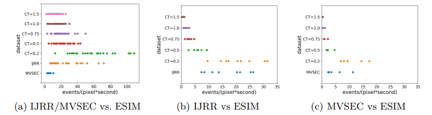
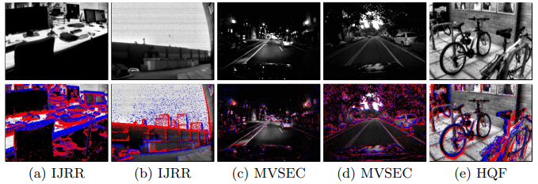
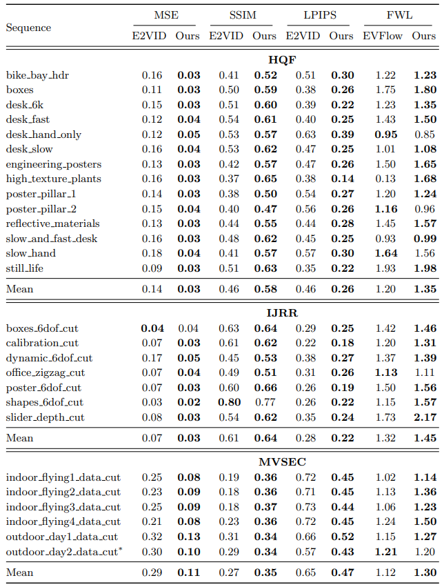
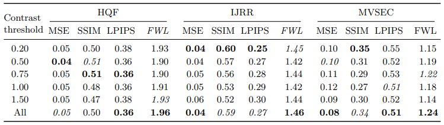
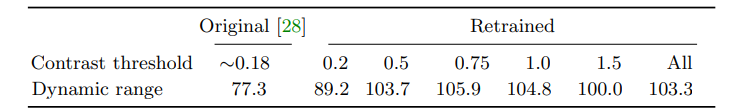
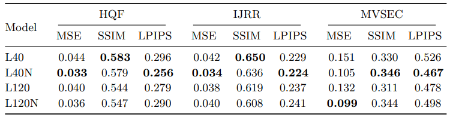

E2vid+: Reducing the Sim-to-Real Gap for Event
Reducing the Sim-to Real Gap for Event Cameras
Abstract：
事件相机是打破传统范式的新型传感器，它能够以极低的延时记录异步的、逐像素的亮度变化（事件），这使得事件相机成为在高速、大动态范围等传统相机不适用的场景下的最佳选择。最近的工作已经证明基于事件的卷积神经网络在视频重建与光流估计方面取得了较好的效果。我们提出了基于改进训练数据的策略，现有的视频重建SOTA用我们的方法重新训练之后提升了20-40%的性能，而光流网络则高达15%。基于事件的视频重建的一个难点是现有的数据集缺乏大量的ground truth。针对此，我们提出了一个新的数据集High Quality Frames（HQF），其中包含了DAVIS240C拍摄的事件和ground truth，这些图像拥有良好的曝光与极低的运动模糊，我们在HQF和几个现有的主要事件相机数据集上评估了我们的方法。
Contribution：
- 我们提出了一种生成合成训练集的方法，以现有数据集的统计分析为指导，提高了对真实事件数据的可泛化性。
- 我们还提出了一种简单的动态训练时间的噪声增强方法，可使视频重建性能提高10%。
- 提出HQF数据集
- 一种光流估计评价指标（FWL），为事件数据量身定做，不需要ground truth。
Method
Event Camera Contrast Threshold
Contrast Threshold（CT）是事件触发的阈值，真实情况中，阈值不是一个常数，是会变化的，因此，在ESIM中，会用正态分布（μ=0.18，σ=0.03）来模拟这一变化。
一种测量CT的方法是取每像素每秒的平均事件数, 虽然存在其他方法，但是我们发现调整模拟器的CT来拟合效果不错，该值取决于场景，运动模糊与过曝场景事件更多。

（a）表示IJRR和MVSEC的CT估计 vs 后文提到的ESIM训练数据集；（b）表示IJRR的CT估计 vs IJRR APS帧的ESIM模拟事件；（c）表示MVSEC的CT估计 vs APS帧的ESIM模拟事件。
如上图所示，对于来之IJRR数据集的序列，0.2至0.5的对比阈值设置更合适。运动的多样性同样会导致阈值升高，如序列紧密的MVSEC。由于糟糕曝光的APS帧会影响实验精度，因此我们筛选了曝光较好的，运动模糊少的图像来做上图所示的实验。

上面是APS帧，下面是覆盖了事件的，可以发现，由于APS帧的质量非常差，很多事件中的特征在APS帧中都是不可见的，IJRR和MVSEC这种8靠谱，会影响最终的评估，因此启发了我们的HQF数据集。
Training Data
ESIM模拟：从COCO中随机选取图片，280个序列，10s，序列在四个原型场景之中交替，从慢速到快速，物体由少变多，以提升模型的泛化能力。生成序列时，contrast thresholds（CTs）从 0.1到1.5，由于真实事件相机通常没有完美平衡正负阈值，故设正阈值positive threshold .
将帧间的所有事件组成Voxel Grid，详见E2vid。
voxel的密度可能会有很大的变化，这取决于相机的运动与帧率，因此，应该在大范围的事件率，与大范围的voxel密度上训练，我们用，此前的实验证明，差距不大。
关于损失，我们用LPIPS作为损失，另外，我们还引用了基于光流的时序一致性损失，详见E2vid。网络每一次输出都计算损失（多对多），最后再求和进行反向传播。RNN的序列长度取40/120。
Data Augmentation
在训练过程中，Rebecq 偶尔将输入事件设置为0并前向传播，与先前的ground truth计算损失，初始化pause的概率为 ，而当序列已经pause时，维持pause状态的概率是，以此来鼓励偶尔的长pause，这能够让网络的循环单元在没有新事件输入的情况下学会“保存”输出图像，我们用pause增强来训练所有循环网络。
事件相机会受到背景噪声，refractory period after an event和造成虚假事件的热像素等影响，为了模拟真实事件，我们应用了1ms的refractory period。在训练时，对于每个L长度的输入序列，我们添加均值为0的高斯噪声（）来模拟不相关的背景噪声，并且随机选择一些“hot” pixel，热像素的数量是0到0.0001的均匀分布，乘以总像素数，热像素的数值服从高斯分布（），加入到每个序列的每个张量的每个temporal bin中。后续会做消融实验。
Architecture
为了排除网络结构的影响，继续使用E2vid以及EV-FlowNet。
High Quality Frames Dataset
此前提出的数据集IJRR MVSEC等的ground truth质量较低，我们提出了HQF数据集，该数据集包含了良好曝光与最小运动模糊的ground truth。除此之外，该数据集有更多的场景与运动。我们使用两不同的DAVIS240C传感器来捕捉数据，两传感器具有不同的噪声与CT。使用RPG DVS ROS的默认偏置设置，将曝光设为默认、我们的HQF提供了时间同步的、事件和DAVIS帧。
Experiments
Evaluation
在IJRR，MVSEC以及自建的HQF数据集上对MSE，SSIM，LPIPS等指标进行测试，结果如下：

Contrast Thresholds
我们研究了模拟器的阈值CT的影响，用CT从0.2到1.5生成的数据集重新训练了几个网络，下表呈现了在IJRR与MVSEC上的重构结果，对于IJRR时CT=0.2时最好，而MVSEC在CT=1.0时最好。

使用更广泛的CT值可以获得最佳或次最佳的性能（ALL），也就是更好的泛化性能。我们相信低CT（高事件速率）会减少输出图像的动态范围，如下表所示，这可能是由于网络在训练时习惯了高密度的事件，而在推理时只能使用较低密度的事件，当训练原始E2vid时，动态范围随着CTs的增加而增加。

Training Noise and Sequence Length
为了确定序列长度与噪声增强在训练中的影响，我们使用序列长度40与120，加噪声与不加噪声进行对比实验。实验结果如下表所示：

序列长度不同并没有显著影响结果，训练过程中噪声增强使L40的模型得到了5%-10%的增长，而L120则没有明显增长。定性地说，增加更多的噪声鼓励网络更平滑输出，而减少噪声可能鼓励网络“重建”噪声事件，导致在E2vid（无噪声训练）中观察到的artifacts。
总结
论文的目标很明确，对合成数据集的事件模拟器进行实验，证实了由阈值CTs带来的事件率的变化会影响模拟数据与真实数据的差距，越接近真实数据越好，通过一系列调整，将网络性能提高了将近40%。
以前的工作会无意中过度拟合他们的模型，每个数据集由各自的特性，这也就使泛化能力非常受限，因此，我们的方法可能对预训练会更有帮助。
在数据集上，虽然E2vid+各方面薄纱E2vid，但是在IJRR上的差距最小，因为该数据集具有较低的CT，而在较高CT的MVSEC上表现最差，这也与我们的发现一致，性能由训练集与测试集的相似性决定。
总之，使用ESIM等模拟器合成数据进行训练时应避免过拟合问题，使用大范围的CT，适当的噪声以及暂停增强，来确保模型的泛化能力。